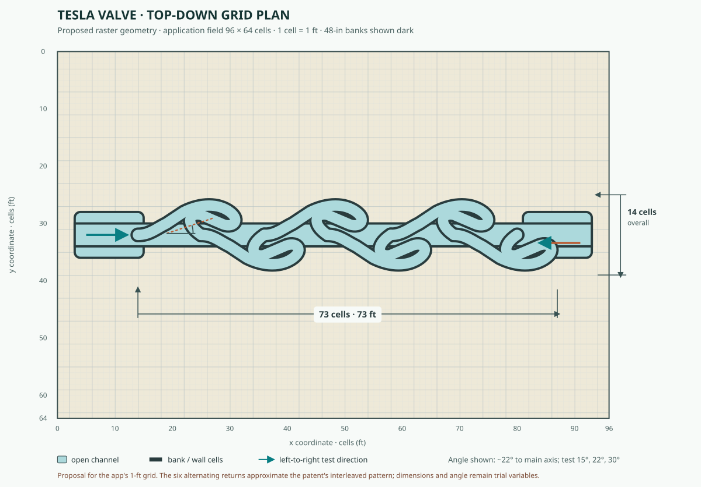

Geometry review · staggered MAC shallow water
Model the interlocking passages, not side pockets
The patent figure shows a long conduit filled with closely spaced, interleaved hooked passages. The curved returns alternate above and below the axis, and their narrow diagonal throats redirect flow through successive stages. My earlier sketch replaced this with three isolated U-shaped side pockets. That was the wrong topology.
Proposed app layout · top-down and scaled

What the earlier trials do and do not show
The previous pulse trials used the exact C# staggered-MAC model with first-order velocity advection enabled. They compared the existing broad single bypass against three small, isolated U-shaped side pockets. For each direction, twenty one-inch drops were added at 24-tick intervals at the inlet (100 cell-inches total), and the model advanced to tick 2400. “Center crossing” is cumulative net volume across a full-width section; branch storage is water remaining in the side pockets.
Those trials were valid for comparing the two geometries that were actually rasterized, but neither candidate matches the patent’s interlocking, alternating passage sequence. The results below therefore do not validate the corrected schematic or select its angle. They remain useful evidence that transient pulse response and stored branch water can disagree with the fixed-head trial.
Earlier isolated side-pocket results
| Layout | Merge | Easy crossing | Hard crossing | Easy / hard | Easy / hard bypass storage |
|---|---|---|---|---|---|
| Current single loop | 45° | 4.522 | 8.038 | 0.56 | 7.000 / 2.338 |
| Three compact loops | 30° | 3.669 | 3.093 | 1.19 | 7.564 / 10.474 |
| Three compact loops | 45° | 3.799 | 3.446 | 1.10 | 7.359 / 10.483 |
| Three compact loops | 60° | 3.979 | 4.150 | 0.96 | 7.009 / 9.836 |
Units for crossings and branch storage are cell-inches. These labels describe the former side-pocket candidate only. Do not infer a 30° optimum for the patent-style geometry from this table. A proper directionality claim requires matched-flow pressure drop; this pulse protocol is only a transient screening measure.
Orientation and model controls
Mirroring the former single loop made main-channel pulse transfer nearly symmetric: 6.123 versus 6.153 cell-inches. That layout also changes apparent preference with the test setup: its fixed-head equal-tick sample at tick 1600 favors forward discharge by about 10%, while the empty-start small-drop pulse moves 78% more water through the center in reverse. This is a warning against treating either old layout as a dependable Tesla-valve reproduction.
With velocity advection disabled, the current layout crossed 5.301 cell-inches forward and 10.017 reverse in the same pulse protocol. This model’s response depends on transient storage and momentum treatment as well as the drawing.
Physics and limits
Real Tesla-valve action comes from direction-dependent losses in an asymmetric, fixed passage. In the favorable direction, most flow can continue down the main path, with limited diversion. In reverse, the branch entrances capture more of the stream; turns, contractions, separation, recirculation and collisions with returning flow dissipate more energy. The geometry permits both directions. Performance changes with Reynolds number and flow rate, so a small, slow drop experiment may show weak or inconsistent bias.
A meaningful engineering measure is diodicity: pressure drop in the unfavorable direction divided by pressure drop in the favorable direction at matched flow rate. This sandbox instead reports finite-time water transfer and branch storage. Its two-dimensional, depth-averaged MAC scheme does not resolve three-dimensional boundary layers, detailed vortex structure, or turbulent losses; one grid cell is one foot. Treat these runs as a way to screen candidate shapes, then measure matched-flow pressure drop in a higher-fidelity fluid solver or physical model.
Sources
- Nikola Tesla, US Patent 1,329,559, “Valvular Conduit” (1920) — primary source for the fixed conduit and its directional-flow concept.
- Tesla Valve CFD Simulations — public CFD example documenting Navier–Stokes/PISO and large-eddy simulation. This is an illustrative project, not a peer-reviewed validation of the present layout.
- Sandbox model and baseline notes — solver assumptions, existing single-stage geometry, repeatable fixed-head measurements, and CPU/GPU validation.